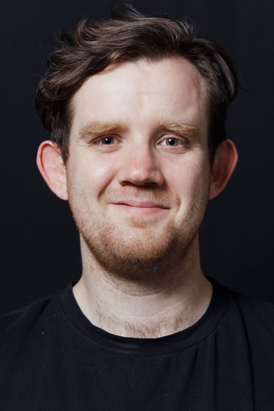

Anton Podkopaev is the head of Programming Languages and Tools lab at JetBrains Research.
He was a postdoc at MPI-SWS and did his PhD at St. Petersburg University.
Anton works on rigorous mathematical specifications and proofs for realistic concurrency systems including CPU architectures (e.g., x86, Arm, Power)
and languages (e.g., C/C++, Java, JavaScript).
His interests include proving compiler correctness, verifying of concurrent algorithms in weak memory models,
mechanizing proofs in interactive theorem provers, functional programming.